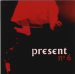

Home Artist links Label link

| Artist: | Present |
| Title: | No 6 |
| Label: | Carbon C7-043 |
| Length(s): | 47 minutes |
| Year(s) of release: | 1999 |
| Month of review: | 01/2000 |
Line up
Roger Trigaux - composition, vocals, direction, guitar on le rodeur
Reginald Trigaux - guitars, vocals
Dave Kerman - drums, percussion
Pierre Chevalier - pianos, mellotron, vocals
Keith Macksound - bass
David Davister - drums, percussion on sworlf
with
Yuval Mesner - cello
Tracks
| 1-4) | The Limping Little Girl | 16.53
|
| 5) | Le Rodeur | 1.58
|
| 6) | ? | 0.09
|
| 7-12) | Ceux D'en Bas (suite) | 19.30
|
| 13) | Sworlf | 8.31
|
Summary
Present is back after their great Certitude record. Denis has gone back to form
Univers Zero and four new members are featured besides the ever present
Trigaux family.
The music
The first track (in four parts) is The Limping Little Girl. Opening with a
little girl singing, this is a typical piece in the style: odd signatures,
tense melody lines and tensely played on guitar. The occasional "Didn't You
Hear What Your Mother Said" has an estranging effect. A repetitive first part
that moves right into the lighter (but no less repetitive) second part. The
name that comes to mind mostly here is King Crimson with dark tones played by
the bass and the distorted ones on the guitar. If you are asking me which
King Crimson, then because of the chaos inherent in the music I would say the
ProjeKCt kind. However, I like Present better, maybe because the overall
repetitiveness makes it easier for me to grasp or maybe because melodically
something is happening here. In the third part the music becomes like a
mosquito repeatedly ramming its head into the windowpane, wanting to get out,
but getting nowhere. The bass becomes very heavy in this part. Some people
will be driven out of their mind here. After the girl returns with her
la-la-la, the track is recaptured in the fourth and final part with plenty of
busy drumming added. An unnerving piece.
Le Rodeur (The Bum) is by comparison a very slow and relaxed piece. Sparse
percussion, guitar in the back seemingly like the horn on a ship in the mist,
terrifying grinding vocals and a somewhat industrial approach to the music.
After this short piece we pause in track 6 to continue with the main part
of this album, Ceux D'En Bas (suite) in six parts. In the first part, Le Matin,
the music has an Arabic quality. Of course, the music is quite repetitive, one
of the main characteristics of the often dissonant music. In this part the pace
goes up a bit, but it never gets really heavy, just a bit faster. I like the
way the band uses the piano, both for melody, riffing and percussion.
La Reve De La Nuit continues the piece in a loud way before handing the reigns
to the rather rustic La Realite. Lots of (soothing) bass on this one.
Vers Le Cauchemar even features some vocals which are continued on Le Cauchemar
Yo. The vocals are quite heavy and imposing, reminding me a bit of Magma.
Le Combat closes this second long track. Lots of bass and high pitched guitar
build a nice tension. This is continued for quite a while as piano and
busy drumming join in the thrall and the pace continues to go up until it
reaches a climax at the very end.
Closer is Sworlf. After an eerie opening on guitar, the sound lets down a bit
and the focus is on the piano with the guitar moved into the back. It is a
rather playful piece, a good thing to have after the punishment of the previous
track. Compared to the other pieces this one is a bit uneventful.
One remark about the CD: turning the CD around the disc falls out easily. Maybe
this only holds for my copy, but maybe it is a manufacturing error and also
present in other copies. There's seemingly nothing broken in the jewel case.
Beware.
Conclusion
In my opinion this is a much better album than the rather tame Univers Zero
just released on Cuneiform. The music is very much in the style of (recent)
King Crimson but more thematic, with even better tension building and more
importantly better melodies. The music is highly repetitive, often dissonant
and although it might be bad for some people's health a worthy follow-up to
the good predecessor Certitudes. However, No. 6 is much harder and makes less
compromises. Compared however to many RIOish bands, the music of Present flows
a bit better and indulges less in thrills and fills.
© Jurriaan Hage